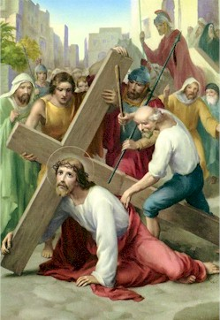

Hmunthumnak
Ⅲ

P : Christu Bawipa, nangmah cu kan lo biak ih kan lo lawm asi.
M : Zianghrangah tile na thianghlim thinglamtah in leitlun minung hmuahhmuah cu na tlen zo asi.
P : Bawipa Jesuh cu thinglamtah rit zet phur in Calvary tlang zin a kai lai ah a baang tuk ih a feh thei nawn lo asi. A ral pawl in an thawi, an sit ih zonzaih phunkim a tuar asi. Gethsemane hmuan sungih a thlan thisen luang tiangin a tuar mi a thinharnak le a takpum kuai ṭheh tiang ih a tuar mi a hma pawl ruangah a tha a cem ih thinglamtah hnuai ah a sawn asi.
Thla kan cam pei :
Kan sualnak ruangah thinglamtah rit zet hnuai ih a tlu tu Bawipa Jesuh, na tuar mi zonzaih retheinak khi ruat in nangmah lo zum feknak thawn tisa le thinlung duhnak ṭha lo hmuahhmuah suptheinak thazaang in pe hram aw.
Vancung ih a um kan Pa...
Ave Maria...
Pa, Fapa, Thiang Thlarau hnen ah...
P : Bawipa kanmah in zaangfah aw.
M : Kanmah in zaangfah aw.
P : A thi zo mi ih thlarau tla cu Pathian zaangfahnak in nunnuamnak sungah rak cawl tlang thlang seh law.
M : Amen.
3.Fapa neihsun thah a tuar ih, Nangmah lungsia thinkuainak khi, Zo so a rel cawk thei ding.